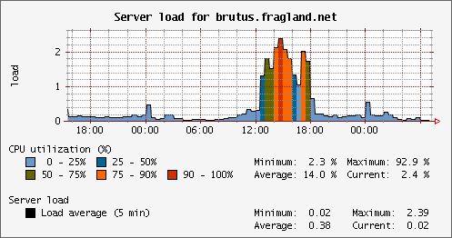

Welcome to JRobin
|
JRobin 1.4.0 is available! |
|
We strongly recommend that you upgrade from version(s) 1.3.x to 1.4.0. There are many new interesting features you probably don't want to miss. Read more about the new release here. If not sure what JRobin can do for you, check the gallery page first - all the graphs you will find there are made with JRobin. It's easy to switch from RRDTool to JRobin, just check our quick reference page. Novice RRD users should not skip this fine RRD tutorial. Send your JRobin graph, it will appear on our gallery page! |

Sample graph created with JRobin. See more graphs on the gallery page.
First time here?
JRobin is a 100% pure java implementation of RRDTool's functionality. It follows the same logic and uses the same data sources, archive types and definitions as RRDTool does. JRobin supports all standard operations on Round Robin Database (RRD) files: CREATE, UPDATE, FETCH, LAST, DUMP, XPORT and GRAPH. JRobin's API is made for those who are familiar with RRDTool's concepts and logic, but prefer to work with pure java. If you provide the same data to RRDTool and JRobin, you will get exactly the same results and graphs. JRobin is made from the scratch and it uses very limited portions of RRDTool's original source code. JRobin does not use native functions and libraries, has no Runtime.exec() calls and does not require RRDTool to be present. JRobin is distributed as a software library (jar files) and comes with full java source code (LGPL licence).
You will not understand a single thing here if you are not already familiar with RRDTool. Basic concepts and terms (such as: datasource, archive, datasource type, consolidation functions, archive steps/rows, heartbeat, RRD step, RPN, graph DEFs and CDEFs) are not explained here because they have exactly the same meaning in JRobin and RRDTool. If you are a novice RRDTool/JRobin user, this annotated RRDTool tutorial is a good place to start.
Why JRobin?
Nothing can be compared with RRDTool. Period. Tobi Oetiker did such an excellent work that any attempt to write something similar to RRDTool will probably look pathetic.
Several years ago I used RRDTool for Internet traffic monitoring in a complex, commercial project. Front-end application (data sampling and validation) was written in Java, but RRDTool did all the hard work. No doubt that RRDTool is a wonderful and very useful tool especially for those inclined to pure C/C++ or scripting languages like Perl or PHP, but I am a Java addict since I discovered this superior programming language. Java does not prohibit usage of external tools, scripts and native libraries but such practice breaks the basic Java motto ("code once, run everywhere") and should be avoided whenever possible. Having finished some swift researches I was astonished that nobody tried to implement the same concept in pure Java. Even OpenNMS, excellent Java application for network monitoring used its own JNI library as a wrapper around RRDTool. And something that uses JNI will never become something that is easily portable - we are talking about different world here.
RRDTool raises some issues if you try to use it with Java. RRDTool is written in good old C, and at the present moment there is no complete, official, and bullet-proof Java interface to RRDTool functions. You have only several options:
- To spawn RRDTool commands as external processes, through Runtime.exec() calls. I don't like it, because - it's not pure Java, and it's slow. Your application will have to carry the source code of RRDTool everywhere around and it has to be recompiled for different platforms. I used this approach in several of my applications and managed to crash Sun's JVM from time to time, usually under heavy loads ("an error has happened outside of JVM", that's all you'll get from dying JVM)
- To use some native Java library as a wrapper for RRDTool functions. This approach is much faster than ordinary Runtime.exec() call.You could try my RRDJTool library or the library bundled with OpenNMS, but it's still not pure Java. And you will have a growing headache whenever your native library has to be moved from one platform to another.
To make things even worse, Runtime.exec() is probably the weakest and the most complicated part of the entire J2SE. It just looks simple, but to use it properly you'll have to read javadoc very carefully. It's surprisingly easy to write java code with Runtime.exec() which works well on Windows or Solaris, but crashes or blocks JVM on Linux. There are several excellent articles on the Web to help you with this issue, and this one is probably mandatory. But, sooner or later you'll end with a conclusion that support for external processes in Java is unnecessarily complicated and somewhat unnatural.
I choose deliberately to look pathetic, but I could not resist to create a complete, pure Java replacement for RRDTool. So, JRobin is here. I'll try to make my point here:
- JRobin is a free software library (API) for RRD files management and graphing. JRobin is not a set of command line utilities like RRDTool.
- It comes with full source code (100% pure Java).
- JRobin guarantees the following: If you perform the same sequence of RRD create, update and fetch operations using RRDTool and JRobin API, you will get exactly the same results. Without this feature, JRobin would be pointless. However, we deliberately introduced some minor differences in data processing between JRobin and RRDTool. We believe that in some rare special cases JRobin should have more processing power than RRDTool.
- JRobin supports exactly the same data source types (COUNTER, ABSOLUTE, DERIVE, GAUGE) and consolidation functions (AVERAGE, MIN, MAX, LAST) as RRDTool does.
- JRobin API is written to be fully compatible with the syntax and logic of key RRDTool commands (update, fetch, graph). If you are familiar with RRDTool and Java, you will have no problem to use JRobin API to manipulate RRD files.
- JRobin is made from the scratch. JRobin is not a port of RRDTool's C source code to Java. In fact, RRDTool source code is used in JRobin in very small doses (for example, for rollover detection with COUNTER data types, but even Tobi borrowed that part of the code from someone else ;)
- JRobin files have fixed sizes, as RRDTool files. However, JRobin uses its own binary file format: you cannot use JRobin API to manage RRDTool files and vice versa.
- JRobin RRD files are portable, RRDTool files are not. Try to copy a RRDTool file from Linux to Windows platform and fetch data from it. It does not work! But with JRobin you are free to create your RRD files on Solaris and transfer them to Windows or Linux platform for further processing. It works! That is why I had to define my own file format which is different from the format used in RRDTool - there is no point in creating portable Java application backed by non-portable data files.
- JRobin uses the same XML format for RRD dump as RRDTool. You can dump your JRobin file to an XML file which can be imported by RRDTool. And vice versa.
- RRDTool is such a great tool because of its 'scripting' capabilities: graph and database definitions could be easily isolated from the source code. When you want to change the look of your RRDTool graphs, you don't have to recompile the whole source. This issue was a week point of JRobin prior to 1.3.0 version. At the present moment it is possible to create JRobin RRD files and graphs starting from external XML template files. You change the template, not the source code when you want to change creation parameters of your RRD files and graphs.
- Prior to version 1.2.0, JRobin graphing capabilities were made on top of JFreeChart (excellent free open-source Java chart library). When Arne Vandamme joined me as a developer, he decided to rewrite the graphing portion of JRobin from the scratch. Eventually, he made JFreeChart obsolete. At the present moment, JRobin is a standalone Java library which supports DEF, CDEF, GPRINT, COMMENT and other important graph directives found in RRDTool's graph command (even RPN extensions). Thanks to Arne, JRobin graphs now have almost the same look&feel like RRDTool graphs. To be honest, RRDTool is still a little more flexible, but just a little :) We plan to add more functionality and power to the graph.* package of JRobin later but right now, we like it the way it is - it suits even complex everyday tasks we used to handle with RRDTool.
Performance issues
It would be quite unfair to compare JRobin and RRDTool when it comes to benchmarks. RRDTool is written in C and you should not be surprised that C-code runs considerably faster than its Java counterpart. Things will get even worse if you try to use JRobin in the most obvious but also the slowest way.
For example, here is the code to update the same RRD file 10.000 times in a row. It's really slow. It takes some 50 seconds (on my poor computer) to do the job on a RRD file with two datasources (named 'input' and 'output'), four AVERAGE and four MAX archives defined:
// version (1)
String rrdPath = ... ;
long timestamp = ... ;
for(int i = 0; i < 10000; i++) {
RrdDb rrd = new RrdDb(rrdPath);
Sample sample = rrd.createSample(timestamp);
sample.setValue("input", ...);
sample.setValue("output", ...);
sample.update();
rrd.close();
timestamp += ... ;
}
The following (slightly modified) code executes the same number of updates ten times faster, in just 5 seconds (it's faster because RRD file is open only once, in front of the for loop):
// version (2)
String rrdPath = ... ;
long timestamp = ... ;
RrdDb rrd = new RrdDb(rrdPath);
for(int i = 0; i < 10000; i++) {
Sample sample = rrd.createSample(timestamp);
sample.setValue("input", ...);
sample.setValue("output", ...);
sample.update();
timestamp += ... ;
}
rrd.close();
The code above is much, much faster, but in real-world applications you'll have to maintain a list of references to open RRD files somehow. This could be complicated if you work with multiple threads and dozens of RRD files at the same time. RrdDbPool class resolves this issue - you can follow the simplest possible logic (like in the first example), but now with a decent benchmark time:
// version(3)
RrdDbPool pool = RrdDbPool.getInstance();
String rrdPath = ... ;
long timestamp = ... ;
for(int i = 0; i < 10000; i++) {
RrdDb rrd = pool.requestRrdDb(rrdPath);
Sample sample = rrd.createSample(timestamp);
sample.setValue("input", ...);
sample.setValue("output", ...);
sample.update();
pool.release(rrd);
timestamp += ... ;
}
Version (3) is slightly slower than (2): it takes one extra seconds (6 in total) to do the job, but it gives you freedom to ask for a RRD file reference whenever necessary without seriously affecting the performance of your application. The pool will open the underlying RRD file when needed and if several threads request the same RRD file at the same time - the same reference will be returned.
JRobin logo
If you happily used JRobin in one of your (non)commercial projects, it would be nice to place the following logo with a link to http://www.jrobin.org on your web site:
It will help JRobin to gather even more attention from Java developers. However, this is not mandatory. Find other ways to support JRobin on developer's page.
Copyright © 2003, 2004 Sasa Markovic & Arne Vandamme. All Rights Reserved.